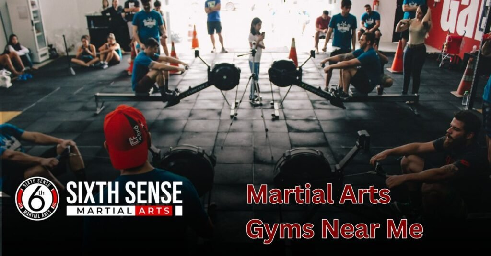
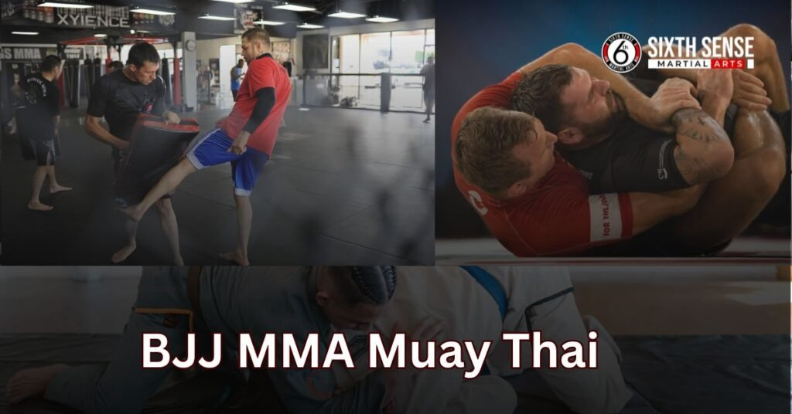
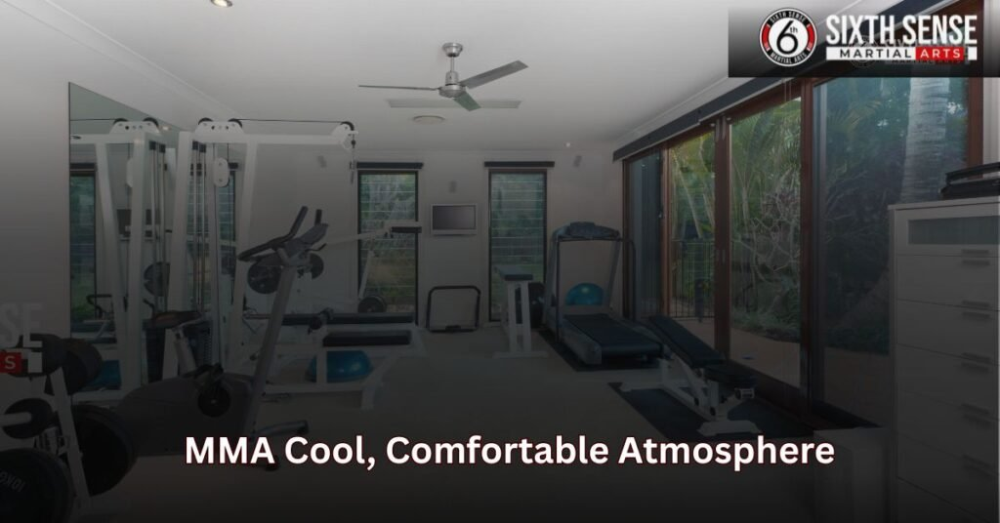

Martial Arts Gyms Near me with Real Coaching and Care

Martial arts gyms near me is more than just a search it’s a sign that you’re ready to take a meaningful step toward something better, whether that’s gaining self-defense skills, improving fitness, finding mental clarity, or all three.
Martial arts isn’t just about learning how to fight; it’s about building focus, discipline, and the drive to push yourself and grow every single day.At SixthSense MMA, we combine expert coaching, a supportive atmosphere, and flexible programs so you can train smarter, not harder no matter your age or skill level.
What is martial arts?
Martial arts gyms near me is not just about fighting or learning how to throw punches, kicking, or using your elbows and knees it’s about personal growth, discipline, and character-building. Whether you’re young or old, learning to defend yourself through striking or grappling styles like BJJ, Brazilian Jiu-Jitsu, Judo, Muay Thai, Taekwondo, or Karate helps you build confidence and stay mentally and physically strong.
This mix of arts and technique allows anyone to improve their fitness, release stress, and stay balanced. When you learn to control your body and your emotions in a combat setting, you also develop respect for yourself, your opponent, and for all types of people.
That’s why many people starting martial arts soon become better in all areas of life, and why so many version of martial arts are still used today to stay fit and focus better because it’s about more than sport, it’s about becoming your best personal self in a short time.
Looking for a Martial Arts Gym Near You?
Finding a martial arts gym today isn’t just about fitness it’s about choosing a place that supports your personal growth, builds mental strength, and offers real, structured coaching that fits your lifestyle
Whether you’re a beginner or looking to enhance your skills in MMA, Karate, BJJ, or Muay Thai, the right gym can help you build confidence, manage stress, and grow in both mind and body. Here’s what really matters when you’re making that decision:
What Martial Arts Really Mean and Their Role in Today’s World
Martial arts offer more than just fighting techniques they teach discipline, confidence, and survival skills that apply to everyday life. Through training, people learn to stay calm under pressure, maintain balance, and face challenges with mental strength and respect.
Common Struggles People Face When Choosing a Local Gym
Here’s a deeper look at the most common challenges people face when trying to find the right martial arts gym:
• Unclear Pricing
Many gyms avoid posting their prices online or over the phone, leaving people confused about what they’re really paying for. When fees are revealed late or only after a trial class, it can feel like a trap. Some even add extra charges for uniforms, testing, or equipment. Without upfront honesty, it’s hard to trust the gym’s value or training plan.
• Unclear Goals
If a gym doesn’t help you set personal goals, it’s easy to lose direction. Beginners need clear guidance to know what skills they’ll learn and how progress will be measured. Without goal-setting, training feels random and discouraging. Good coaching connects each student’s journey to a larger purpose that builds confidence and discipline.
• Too Intense Training
Some gyms throw new students into high-level classes without adjustment. This can lead to injuries, anxiety, or feeling like you don’t belong. Beginners need a smooth and steady introduction that respects their pace. Training shouldn’t feel like punishment—it should build confidence, not fear or stress.
• Lack of Comfort or Support
If the environment is cold, overly competitive, or unwelcoming, people hesitate to return. A gym should feel like a community not a place where you’re just another number. Without friendly coaches or respectful training partners, learning becomes uncomfortable. Comfort and support are key to personal growth.
• Hidden Costs
Some gyms seem affordable at first but charge later for belts, events, or even mat time. This lack of transparency causes frustration and a sense of being tricked. Students should never be surprised by what they owe. Honest gyms explain all fees clearly so you can focus on training, not worrying about the bill.
• Distance from Home or Work
No matter how good a gym is, it won’t help if you can’t get there consistently. Long travel time can make regular attendance difficult, especially during a busy week. If the gym isn’t close to your daily routine, motivation drops fast. The right gym should fit into your lifestyle, not make it harder.
• Bad Vibes or Weak Community
Even great techniques won’t matter if the gym energy feels negative. A place with ego-driven members, no real respect, or unhelpful staff can feel draining. Martial arts should lift you up, not wear you down. A healthy gym builds mental strength, not just muscles.
• Burn Out from Poor Structure
Without proper rest, variation, or balance in training, people hit a wall. Overtraining without support leads to physical and mental burn out. A strong gym knows when to push and when to let students breathe. Structure, pacing, and support prevent exhaustion and keep motivation high.
Why Learning Martial Arts Is a Smart and Empowering Choice
Here are key reasons why starting martial arts is one of the best decisions you can make backed by real benefits and positive experiences:
• A Powerful New Hobby
Martial arts gyms near me isn’t just for fighters it’s a fun and meaningful way to spend your time. It gives you something to look forward to while learning valuable skills. Instead of wasting time on unhealthy habits, you’re building discipline, mental strength, and healthy routines. It’s a hobby with real value that makes you better in everyday life.
• A Smarter Way to Stay Fit
Unlike boring gym routines, martial arts combines fitness with purpose. Every punch, kick, and drill pushes your body while teaching real skills. It builds full-body strength, boosts stamina, and helps you burn out stress in a healthy way. You’re not just working out—you’re learning how to move, react, and control your body under pressure.
• Real Tools for Self Protection
From Karate to Muay Thai to BJJ, martial arts give you real-world techniques to protect yourself. You don’t have to be strong to learn how to escape holds or defend against attackers. These systems are designed for all types of people, helping you stay calm and make smart choices in risky situations. It’s practical knowledge that builds confidence.
• A Confidence Booster That Stays With You
The feeling of breaking limits, learning combos, and reaching new belts changes how you see yourself. Martial arts boosts your confidence not just in training, but in school, work, and social life. You stand taller, speak clearer, and feel more in control. It teaches you how to face fear and push through challenges.
• A Supportive, Real Community
Good gyms aren’t just for training they’re places where you connect with others on the same journey. You meet supportive coaches, motivated students, and people who push you to grow. The vibes are real and positive, built on respect, shared goals, and trust. In a world that feels distant and rushed, a martial arts community gives you grounding.
What Makes SixthSense MMA Different?
At SixthSense MMA, you’re not just thrown on the mat and expected to keep up we offer coaching for everyone, with a focus on individual growth, safe training, and step-by-step programs designed for every skill level.
Our expert coaching team brings real experience and builds a strong foundation through conditioning, mindset routines, and personalized plans that support you without shouting or judgment. We know that beginners need comfort, while more advanced students want to be challenged and stay on the edge of their performance that’s why we adapt to all levels and provide the right coaching at the right speed.
•Personalized Coaching That Meets You Where You Are
Unlike one size fits-all gyms, we believe in coaching that respects your pace and goals. Whether you’re a total beginner or returning athlete, our team offers step-by-step support that builds confidence without pressure.
You’ll never feel left behind or out of place. Instead, you’ll see clear improvement and steady growth, with each session tailored to your needs.
• A Safe and Sustainable Training Environment
Your safety matters. We focus on conditioning, proper techniques, and body awareness to prevent injuries and avoid burnout. You’ll be pushed to grow, but never beyond what’s healthy or smart. Our space is designed for learning not fear so you can train hard and still feel secure.
• Real Progress, Not Just Hype
We’re results-driven, but not in a flashy or unrealistic way. You’ll gain skills, sharpen your mindset, and develop fitness through tried-and-true methods. We don’t just hype up the proswe celebrate all our students, from day one to black belt. You’ll see lasting results because we focus on the details and the mental game just as much as the physical.
• Community Support Without Judgment
Our gym feels like a team, not a competition. Everyone trains together, and no one gets judged for being slower, different, or new. The support is real from both coaches and fellow people and we all share the goal of becoming stronger, inside and out. It’s the kind of motivation that lasts long after you leave the mat.
Types of Martial Arts Classes We Offer
At SixthSense MMA, our classes are designed for all levels, ages, and goals blending real-world skills with fitness, discipline, and fun. From kids to adults, beginners to advanced students, every session focuses on comfort, confidence, and smart training led by experienced instructors.
Whether you want to improve technique, build power, or simply enjoy a new journey with supportive guidance, our programs deliver real energy and results.

Brazilian Jiu Jitsu (BJJ)
Our BJJ and Jiu-Jitsu programs focus on ground-based control, joint locks, chokes, and escapes that help you defend yourself efficiently regardless of size or strength. This class is perfect for building flexibility, improving balance, and learning to stay calm under pressure. You’ll sharpen your coordination and develop real skills through live practice and drills.
MMA Fundamentals
Designed for all fitness levels, our MMA Fundamentals class combines striking, takedowns, punches, knees, and locks into one powerful experience. Students learn how to train with discipline while building real strength and timing. These classes use techniques from mixed martial arts, giving you a complete, safe body workout and teaching smart movement under real pressure.
Muay Thai The Art of Eight Limbs
Known as the art of the eight limbs, Muay Thai uses knees, elbows, punches, and kicks to develop full-body control and explosive power. It’s a high-energy class that’s both technical and fun, helping you sharpen technique and boost fitness while maintaining respect for your partner and your body.
Women Only Classes
Created for privacy, support, and safety, our Women-only sessions offer a welcoming space to train and grow in confidence. You’ll learn practical fighting skills and striking techniques in a way that prioritizes comfort, personal pace, and real empowerment. All instructors are trained to build confidence while respecting your individual journey.
Kids Martial Arts
Our kids’ programs are structured to teach discipline, respect, and real martial arts skills in a fun and safe environment. Through structured play and smart instruction, children gain coordination, self-control, and the tools to grow physically and mentally starting their martial arts journey with energy and positivity.
Flexible Schedule, Real Results
At SixthSense MMA, we understand that life can be packed with responsibilities, whether you’re a student, working professional, parent, or just someone trying to find time for personal fitness.
That’s why our training sessions are built around flexibility, offering morning, evening, and weekend options so you can kickstart your journey without feeling rushed or under pressure. Whether you’re an early riser, a night owl, or someone with a busy calendar, there’s always a spot that suits your lifestyle.
Designed to Fit Any Lifestyle
With classes available throughout the day, you can walk into a session whenever it works best for you. Our coaches and staff understand the importance of a consistent routine that still gives you room to breathe. Whether you’re balancing school, a job, or family, we make it easier to show up, train, and move forward.
A Pressure-Free Experience
If you’re not sure where to begin, we offer a free trial—no strings, no commitment, just a chance to feel the vibe and explore your options. Our welcoming environment lets you try different training styles and see what truly feels right, so you never feel boxed in.
Real Support from Coaches Who Care
You’re never just another name on a schedule. Our coaches offer real, personal support and guidance, helping you track goals, manage stress, and get lasting results—at a pace that works for you. You train when you can, and we make sure each moment counts.
The Best Move for Busy People
For those juggling a busy life, this is the right place to build energy, strength, and focus without adding more pressure. The goal isn’t perfection it’s progress. Our gym gives you the space and tools to make your move, one session at a time.
Facility Tour What to Expect at SixthSense MMA
From the moment you step onto the floor, the vibe at SixthSense MMA is positive, motivating, and completely free of ego or toxic energy. Our well organized space is built for real training featuring high quality equipment like punching bags, pads, and updated gear to support every part of your journey.
The gym is always clean, with thoughtful spacing and a safety-first layout that gives you room to move, train, and grow with full focus and comfort.
/
A Cool, Comfortable Atmosphere
You’ll feel welcome right away, whether it’s your first visit or your 50th. The friendly members, warm music, and encouraging energy create a space where you truly belong. This is a place where people cheer each other on, not drag each other down a gym built on respect, not attitude.
Coaches Who Truly Listen and Guide
Our coaches and trainers pay close attention to your form, offer smart corrections, and always make sure you’re safe. They’ll show you how to improve your technique without adding unnecessary pressure, helping you avoid injuries and build real confidence over time. Whether you need a boost or a breakdown of movement, they’re here to support you.
Structure That Supports Real Growth
Every session follows a clear structure from a dynamic warm up to focused drills and cool down stretches so you always know what to expect. It’s this organized approach that fuels real progress, keeps you motivated, and helps avoid burnout. No chaos, just clean routines built to help you level up.
A Space Built for Everyone
Whether you’re new or experienced, young or older, the gym is designed to support growth for all levels. We’ve created a safe, smart environment where the focus stays on technique, comfort, and personal development not showing off. When you train here, you become part of something real.

Pricing That Fits Your Goals
At SixthSenseMMA, we keep our pricing transparent, flexible, and stress free so you can focus on your training, not the fine print. Whether you’re looking for a short-term option or building a long-term routine with your family or friends, our plans are designed to fit your real life needs, without surprise add ons, pressure, or hidden costs. Here’s how we make it easy for everyone to access great training with real value:
Transparent Plans No Hidden Charges
From day one, you’ll know exactly what you’re paying for. We never include hidden fees or confusing add-ons in our plans. Everything gear use, facility access, or extra sessions—is clearly explained before you sign up. With us, what you see is what you get, and what you pay goes directly into supporting your growth and fitness journey.
Pay As You Go or Monthly Memberships
Whether you’re just starting out or building a consistent routine, we offer both pay-as-you-go and monthly membership options. Try one class to get a feel for the vibe, or choose a monthly plan for full access to all sessions and steady progress. This flexibility ensures your schedule, budget, and training goals always stay aligned.
Family or Group Discounts Available
Martial arts is even better when you train together. That’s why we offer family and group discounts for kids, siblings, parents, or friends who want to join as a team. Whether you’re bonding over the experience or simply supporting each other’s goals, you can save money while sharing something meaningful with no long-term commitment required.
Why Local Students Prefer SixthSense MMA
our reputation is built on more than just ads it’s grown through word-of-mouth, genuine encouragement, and the real results seen by students across town.
Whether you’re a beginner, a working professional, or a local student, our down to earth approach and strong community vibe make it easy to feel at home. Here’s why so many nearby residents continue to trust and recommend us:
Well Connected Location With Easy Access
Located in a well-connected part of town, SixthSense MMA is easy to reach whether you’re walking from school, commuting by public transport, or driving in from work. We offer hassle-free parking, clear directions, and a welcoming environment that makes your day to day training journey smooth and consistent.
Real Word of Mouth, Not Just Ads
Most people hear about us through a friend, family member, or colleague who’s already seen the benefits of our training not flashy marketing. Our strong word-of-mouth and local recommendation network proves that our craft, care, and down-to-earth guidance are what truly keep people coming back.
Professional Instructors With Community Roots
Our instructors aren’t just top professionals they’re respected and trusted in the local martial arts scene. Many of them grew up or trained nearby, and they stay humble, committed, and connected to each student’s growth. You’ll train with people who truly want to help you move forward, not just compete.
Supportive Vibe That Feels Like Home
Whether you’re training in the morning, after class, or on the weekend, SixthSense MMA offers a space where students connect, grow, and push each other in a respectful, non-toxic way. It’s not just about the competition it’s about the community. You’ll feel encouraged, seen, and supported every step of the way.
Hear from Our Members
Here’s what real members from across the U.S. have to say about their experience at SixthSense MMA. These aren’t scripted lines just honest reviews from people who’ve trained, grown, and seen real change.
“The coaches here actually care. I’ve trained in a few places before, but SixthSense MMA made me feel seen. I’m getting stronger without feeling overwhelmed.”
Jordan M., Phoenix, AZ
“I started in the women-only sessions to build confidence. Now I train Muay Thai twice a week, and I’ve never felt better—physically or mentally.
Ashley L., Houston, TX
“No drama, no pressure. Just solid coaching, clean mats, and real results. This place gave me back my discipline.”
Chris D., Sacramento, CA
“I brought my teenage son to their kids’ program. He’s more focused now—not just in class, but at school too. Couldn’t be more thankful.”
Monica K., Orlando, FL
“I used to think MMA gyms were all hype, but this one is real. The trainers are humble, and the energy here keeps you coming back.”
Daniel P., Brooklyn, NY
“Tried one trial class and signed up on the spot. Flexible schedule, down-to-earth people, and the kind of atmosphere where everyone roots for each other.”
— Rebecca S., Chicago, IL
“I’m in my 40s and had doubts about starting BJJ. But the coaches helped me every step of the way. It’s never too late to start.”
Eric J., Denver, CO
“SixthSense MMA feels like a second home. The instructors know your name, know your goals, and help you get there without ego.”
Tina R., Atlanta, GA
“I’ve lost 18 pounds since joining, and I didn’t even feel like I was on a ‘program.’ Just showed up, stayed consistent, and got results.”
Brian T., San Diego, CA
Book Your Free Trial Class Today
Booking your free trial class is simple, pressure-free, and designed for real beginners or anyone curious about MMA. In just a few clicks, you can reserve your spot online no stress, no commitments. Our supportive coaches guide you step-by-step through each movement so you can learn at your own pace in a friendly, welcoming space. Whether you’re completely new, trying something different, or coming back after time off, our trial class gives you a real feel of the environment, the energy, and the personal attention you’ll receive. Come see for yourself what makes SixthSense MMA a community built for growth, confidence, and results
Conclusion
We’re more than just a gym we’re a local community built on real coaching, clear guidance, and a clean, supportive facility that never feels intimidating. Whether you’re just starting out or looking to grow stronger in your martial arts journey, our experienced coaches are here to help you progress with confidence. From transparent pricing to a training environment that puts your personal growth first, everything at SixthSense MMA is designed to support your goals without confusion or pressure. It’s the right place, near you, to start becoming the best version of yourself because your journey deserves more than just a workout.
FAQ's
Our gym focuses on building discipline, mental clarity, and confidence through martial arts. You’ll develop stress management skills, better decision-making abilities, and emotional control that apply to all areas of life.
We structure classes with scalable drills and modifications. Beginners get foundational work while advanced students face tougher challenges – all in the same session with individualized coaching attention.
- We prioritize proper warm-ups, technique breakdowns, and controlled sparring. Coaches monitor all students closely and provide modifications for any physical limitations or recovery needs.
Beyond martial arts techniques, we teach respect, focus, perseverance and emotional regulation through structured activities that make learning fun and rewarding.
We foster a no-ego environment where all members support each other’s growth. Regular social events, open mat sessions, and mentorship opportunities build genuine connections.
Train with us in Coppell
The first class is free. Shorts, a t-shirt and a water bottle. We lend the rest.
Book a free class